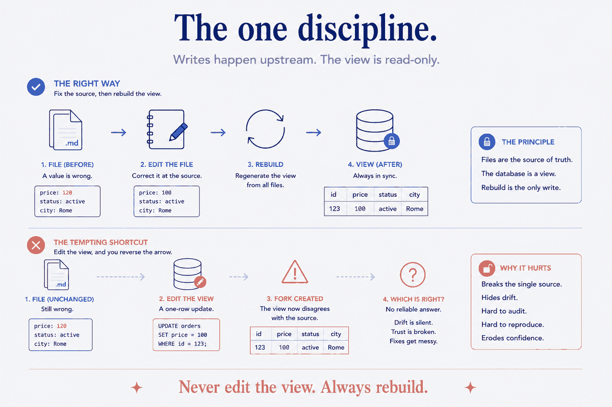
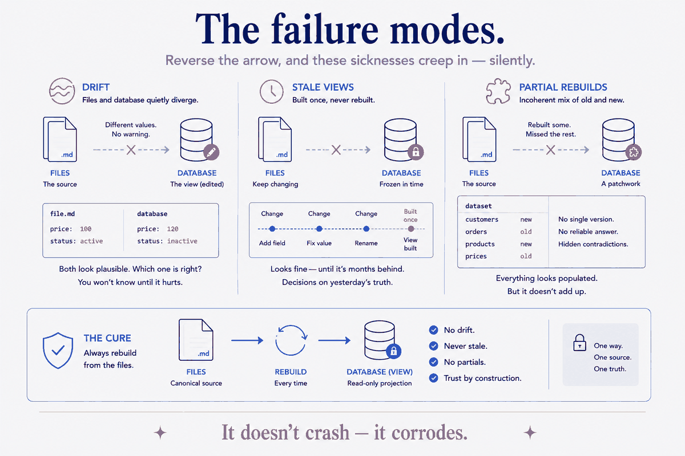

The arrow that decides everything
Build any system that puts your notes, your transactions, your photos, your health data into a database so you can query it, and you make one architectural decision so early and so quietly that you might not notice you made it. It's the direction of a single arrow: do the files feed the database, or does the database feed the files?
Almost everyone gets it backwards, or worse, leaves it ambiguous. They set up a database, start querying it, and gradually start editing it directly — fixing a value here, adding a row there — because the database is where the data is now, and it's convenient. The moment they do, the arrow reverses without anyone deciding it should, and the system develops a slow, invisible sickness: the files say one thing, the database says another, and there is no longer any way to know which one is right.
The healthy shape is the opposite, and it has to be chosen and held: the files are canonical, and the database is a rebuildable projection of them. The arrow points one way only — from files to database — and it never reverses. Your markdown notes, your source records, your exports are the source of truth. The database is a view: a queryable convenience you can throw away and regenerate at any time, because it holds nothing the files don't. Get that arrow right and the whole system becomes trustworthy. Get it wrong and it rots from the inside while looking fine on the surface.
Why files, not the database, deserve to be canonical
It seems backwards at first. A database is structured, indexed, fast — surely that's the real data, and the files are just how you happened to type it in? No. The files win the canonical role for reasons that hold up under pressure.
Files are legible without the machine. A markdown note is readable in any text editor, on any device, in fifty years, with no software that understands your schema. A database row is meaningless without the database. When the question is what do I most want to still be able to read when everything else is gone, the answer is never the binary blob.
Files carry their own context. A note with frontmatter is a self-describing unit — it says what it is, and it travels with its meaning. A row in a table is a tuple of values whose meaning lives in a schema somewhere else. Separate the row from its schema and you have numbers without nouns.
Files are what humans and AIs actually edit. You write in the note. An AI you point at your vault reads and edits the note. The database is not an editing surface for anyone — it's a derived thing. If you let it become an editing surface, you've created a second place where truth can be changed, and two places where truth can be changed is exactly one place too many.
So the files are canonical not by nostalgia but by durability, self-description, and editability. The database earns a different, lesser, essential role: it's the fast queryable answer-machine built on top — and answer-machines are meant to be rebuilt, not curated.
The database is a view — even when it's a "real" database
There's a precise word for what the database is, and it's borrowed from the oldest idea in databases themselves: it's a view.
A view, in database terms, is a query that looks like a table but stores nothing of its own — it's computed from underlying data on demand, and if you drop it, you lose nothing, because you can recreate it from its definition. That's exactly the relationship your analytical database should have to your files. photos.duckdb, the transactions database, the fitness rollups — each is a view over the files, materialized for speed, holding no truth the files don't already hold. Delete any of them and you regenerate it by re-reading the source. It was never the record. It was a lens.
This is true even when the database is a heavyweight one that stores real bytes on disk. The distinction isn't about whether the database physically holds data — of course it does — it's about where authority lives. A view has no authority; it defers to its source. Treat your database as a view — as something that defers to the files — and you've kept authority in the one place that deserves it. The bytes on disk are an optimization. The files are the law.
The one discipline: never edit the view; always rebuild
Everything above collapses into a single operational rule, and it's the rule that people break:
Never edit the view. Always rebuild it.
When a value is wrong, you do not fix it in the database. You fix it in the file, and you rebuild the database from the files. When you want new data in, you add it to the files, and you rebuild. The database is never a place you write to by hand — only a place you read from. Writing happens upstream, in the source; the database catches up by regenerating.
This feels inefficient the first time — why re-read everything when I could just UPDATE one row? — and that instinct is the whole trap. The one-row UPDATE is how the arrow reverses. The moment you edit the database directly, it stops being a projection of the files and becomes a fork of them: an independent copy that now disagrees with its source and will drift further with every convenient shortcut. The rebuild discipline is what guarantees the database can never disagree with the files, because it's always freshly computed from them. It's not inefficiency. It's the mechanism that keeps the arrow pointed the right way.

The failure modes this prevents — the ones nobody warns you about
State the rule and it sounds obvious. Watch what happens when it's violated, and you see why it's load-bearing. Three specific failures, all of which look like "the system is just a bit unreliable" until you trace them to the reversed arrow:
Drift. The database and the files quietly diverge because someone — you, a script, an AI — edited one and not the other. Now a query returns a number that isn't in any file, or a file says something no query reflects. Drift is silent: nothing errors, the system just becomes subtly untrue, and you lose trust in your own data without being able to point at when it went wrong.
Stale views. The database was built once and never rebuilt, so it reflects the files as they were, not as they are. Every query is answering an old version of reality. This is the failure of forgetting to rebuild — and it's why the rebuild can't be a thing you remember to do; it has to be cheap and routine enough to run constantly.
Partial rebuilds. You rebuilt some of the database from some of the files, and now it's an incoherent mix of old and new — the worst state of all, because it's neither the old truth nor the new one, and there's no clean version to fall back to. A rebuild must be all-or-nothing — regenerate the whole view from the whole source, atomically, or don't call it a rebuild.
Every one of these is invisible in the moment and expensive in the aggregate, because they don't crash — they corrode. The rebuild discipline is what makes all three structurally impossible: if the database is always fully regenerated from the files, it cannot drift, cannot go stale, and cannot half-update.

Why this is what makes the system trustworthy for AI
There's a reason this principle sits underneath so many other pieces, and it's about trust — specifically, the trust you need before you let an AI query or act on your data.
When the files are canonical and the database is a rebuilt view, you can hand an AI either one and know exactly what you're handing it: the files are the truth, and the database is a faithful, current projection of the truth, because it was just regenerated from it. A question answered against the database is answered against the files, one step removed but never in disagreement. The AI can query the fast view and verify against the canonical files, and the two will always agree — because one is defined as a projection of the other.
Reverse the arrow and that guarantee evaporates. If the database can be edited independently, then an AI querying it might be reading a value that exists nowhere in your files — a fork, a drift, a stale row — and now the AI's confident answer is grounded in something you can't trace back to a source of truth. The rebuild discipline is what lets you say, of any number the system produces: this came from a file, and here's the file. That traceability is the difference between a system you can let an AI reason over and one you can't.
Keep the arrow pointed at the files
The seductive move, always, is to treat the database as the real data — it's structured, it's fast, it's where the querying happens, so surely that's the source of truth. It isn't, and the day you start editing it directly is the day your data begins to rot in ways you won't notice until you've lost trust in all of it.
This is structure beats magic at the most foundational layer of any personal data system — the layer that decides whether everything above it can be believed. The magic answer is a clever database that becomes the single smart home for all your data. The structural answer is humbler and unbreakable: keep the truth in files that are legible, self-describing, and editable; build the database as a view over them; and hold the one discipline that keeps the arrow from ever reversing — never edit the view, always rebuild. Do that, and your database is exactly as trustworthy as your files, forever, because it is nothing more, and nothing less, than a current picture of them.
Part of the Structure Beats Magic series — the keystone the data-driven pieces rest on: Data-Driven Daily Notes, Health Metrics in a Local DuckDB, From Photo Library to Photo Memory, and the atomic-units piece all treat their database as a rebuildable view. The enterprise form of the same principle — files-as-source, generated artifacts downstream — is Model-Driven Data Engineering.